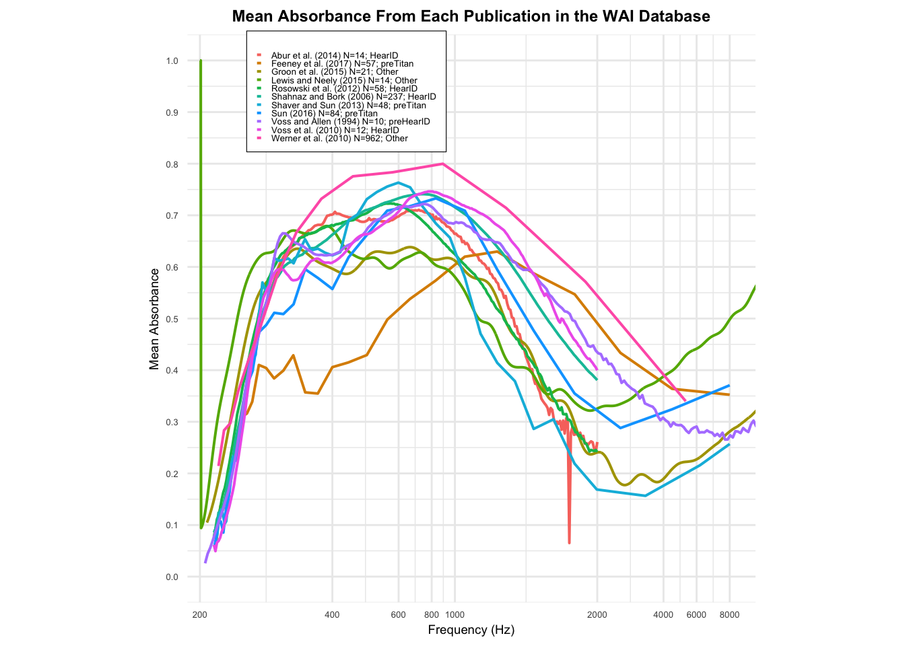
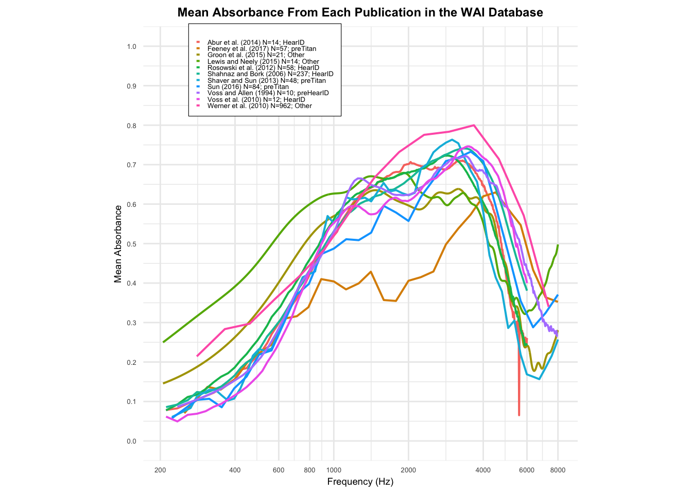

In this project I plan to use the data from the Wideband Acoustic Immittance (WAI) Database hosted by Smith College. With this data I plan to replicate the figure from Voss (2020) titled “Mean Absorbance from Each Publication in the WAI Database”. I started of by arranging the data using a SQL query.
In this query, I grouped the data by Frequency, Identifier, Instrument, Year, and AuthorShortList. In order to get the variable “AuthorShortList” I joined the PI_Info table and the Measuements table on SubjectNumber. I used Concat to make a label for each of the studies with the number of unique ears, the instrument used, and the year and author of the study.
library(ggplot2)ggplot(new_table, aes(x = Frequency, y = Mean_Absorption, color = Label)) +geom_line(size = .7, na.rm =TRUE) +scale_x_continuous(name ="Frequency (Hz)",breaks =c(0, 2000, 3000, 3500, 3850, 6000, 7000, 7500, 8000),labels =c("200", "400", "600", "800", "1000", "2000", "4000", "6000", "8000") ) +scale_y_continuous(name ="Mean Absorbance",limits =c(0, 1), breaks =seq(0, 1, by =0.1) ) +labs(title ="Mean Absorbance From Each Publication in the WAI Database", color =NULL ) +theme_minimal() +theme(axis.text =element_text(size =5),axis.title =element_text(size =7),plot.title =element_text(size =9, face ="bold", hjust = .5),legend.text =element_text(size =5),legend.position =c(0.28, 0.9),legend.key.size =unit(0.1, "cm"),legend.spacing =unit(0.01, "cm"),legend.background =element_rect(color ="black", size = .2, fill ="white"),aspect.ratio =1 ) +coord_cartesian(xlim =c(200, 8000))
Warning: Using `size` aesthetic for lines was deprecated in ggplot2 3.4.0.
ℹ Please use `linewidth` instead.
Warning: The `size` argument of `element_rect()` is deprecated as of ggplot2 3.4.0.
ℹ Please use the `linewidth` argument instead.

This table shows the mean absorbance of frequencies ranging from 200 HZ to 8000 HZ in 12 different studies in the WAI database. As seen in the table, absorbance, on average, increases as frequency increases up until around 1000 HZ, when it drops off and begins to decrease again.
SELECT m.Frequency, s.Sex, AVG(m.Absorbance) AS Avg_AbsorbanceFROM Measurements mJOIN Subjects sON m.SubjectNumber = s.SubjectNumberWHERE m.Identifier='Aithal_2015'AND s.Sex !='Unknown'GROUPBY m.Frequency, s.SexORDERBY m.Frequency, s.Sex;
Now with this SQL query, I am doing a similar thing to the last, except now I am also grouping by “sex” which required be to join the table “Subjects” also in the WAI database. I also chose only 1 specific study to measure on this table, Aithal (2014).
dbDisconnect(con_wai, shutdown =TRUE)
library(ggplot2)ggplot(new_table4, aes(x = Frequency, y = Avg_Absorbance, color = Sex)) +geom_line(size =0.7, na.rm =TRUE) +scale_x_continuous(name ="Frequency (Hz)",breaks =c(200, 400, 600, 800, 1000, 2000, 4000, 6000, 8000),labels =c("200", "400", "600", "800", "1000", "2000", "4000", "6000", "8000") ) +scale_y_continuous(name ="Average Absorbance",limits =c(0, 1), breaks =seq(0, 1, by =0.1) ) +labs(title ="Average Absorbance by Frequency and Gender",color =NULL ) +theme_minimal() +theme(axis.text =element_text(size =8),axis.title =element_text(size =12),plot.title =element_text(size =16, face ="bold"),legend.text =element_text(size =8),legend.position =c(0.1, 0.9),legend.box.background =element_rect(color ="black", fill ="white", size =0.5) ) +coord_cartesian(xlim =c(200, 8000))

Again, this plot shows the average absorbance over frequencies ranging from 200 to 8000. The 2 lines in the plot represent Male and Female tested subjects. As shown by the plot, there is almost no difference in the mean absorbance rates based on gender.